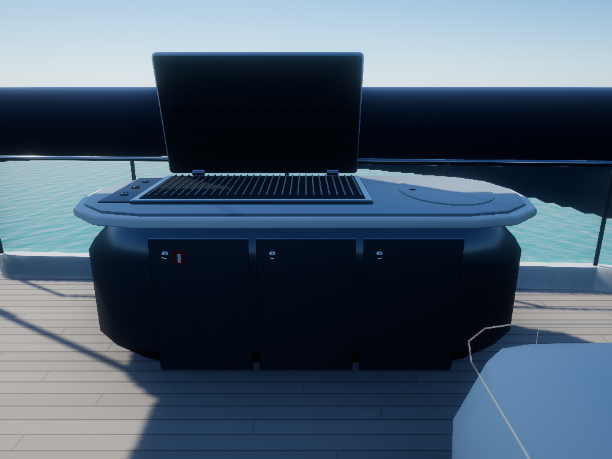
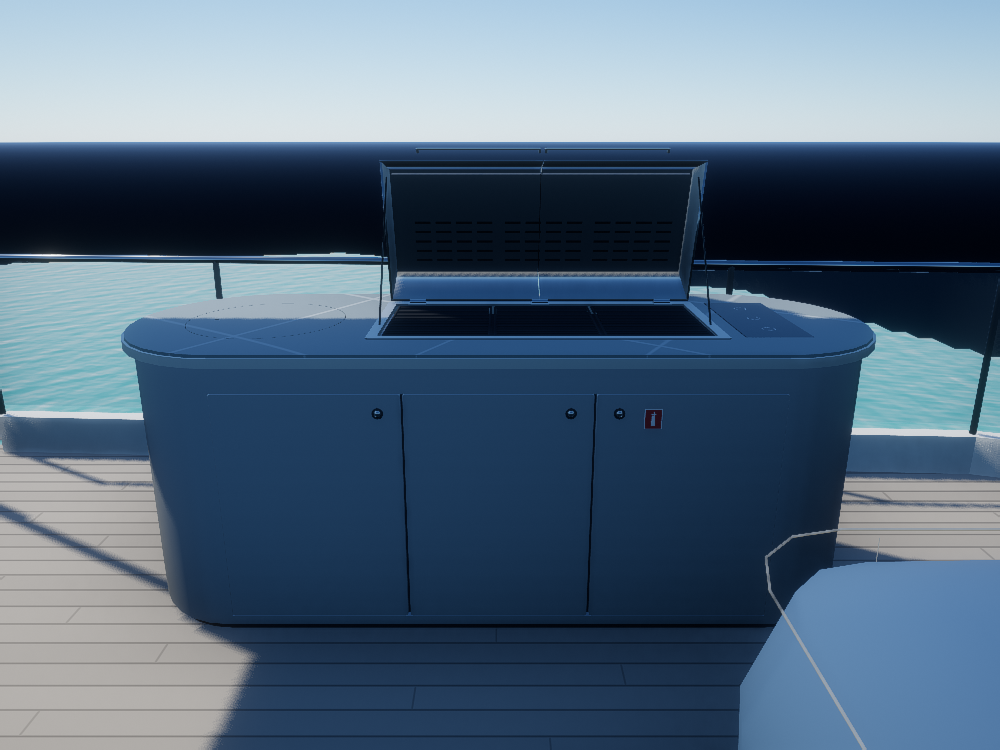
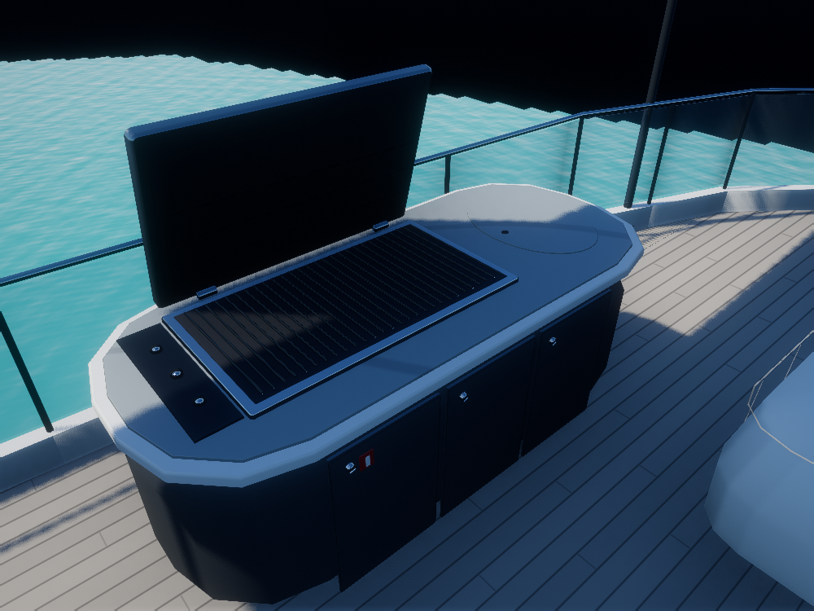
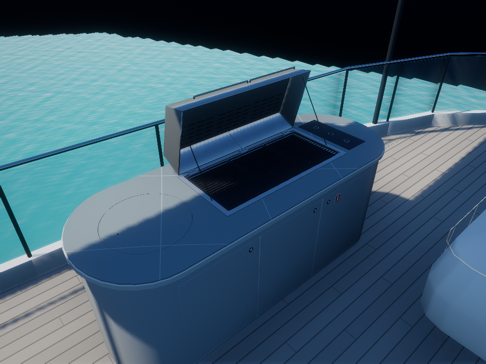
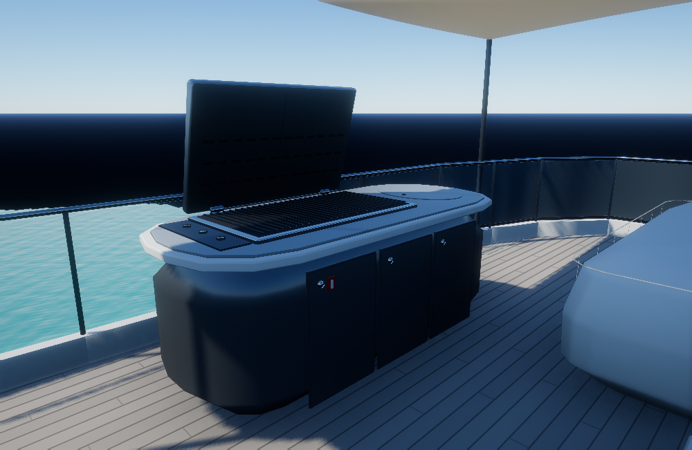
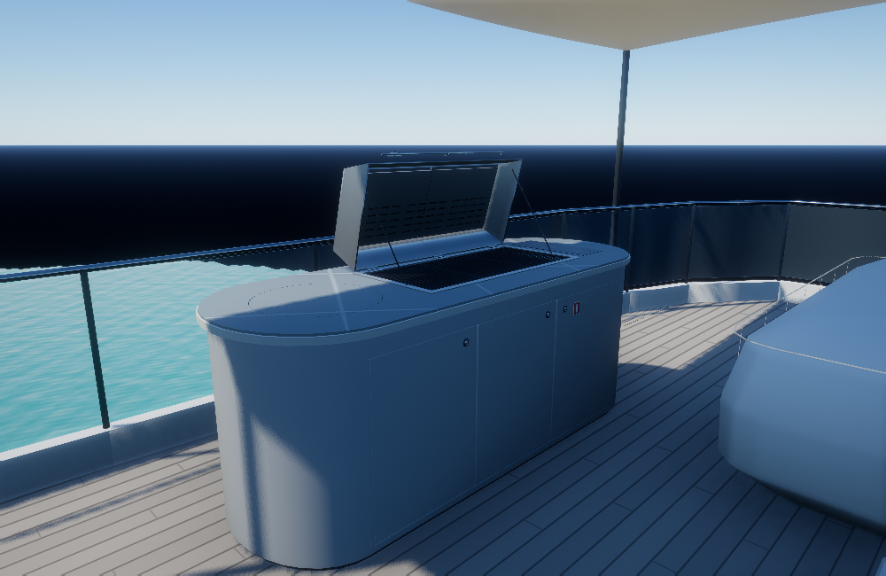
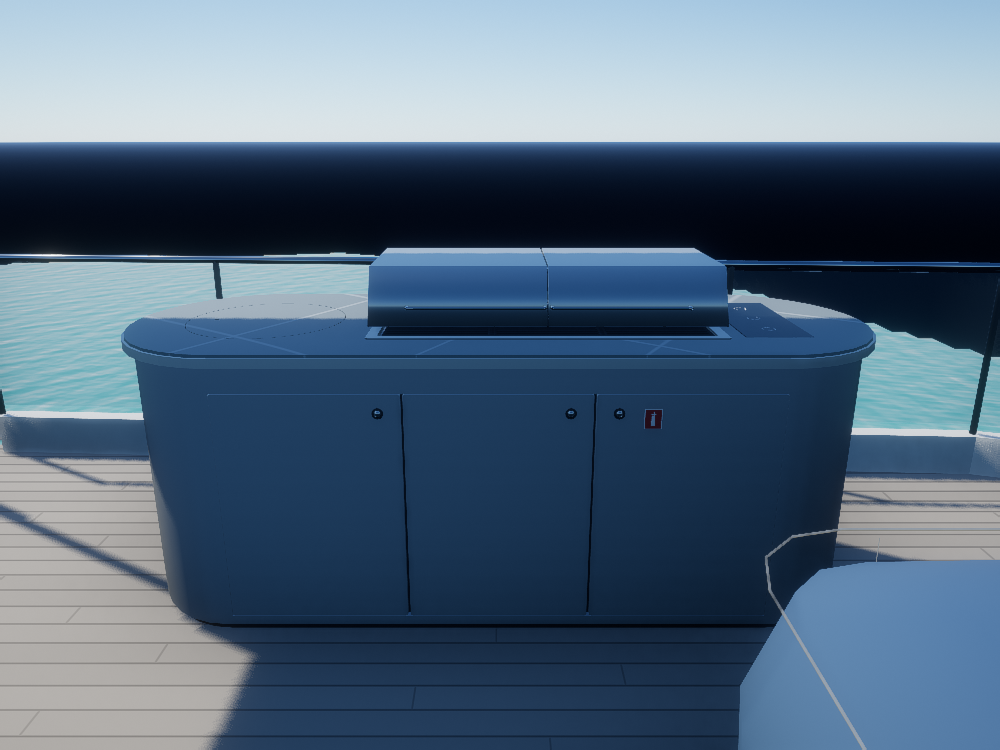
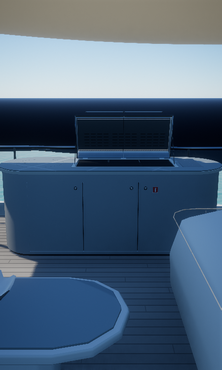

Ver el asador en el yate →Luz de Mar · Asador corregido
Reconstrucción basada en las fotografías proporcionadas: mueble de paredes rectas y extremos curvos, tres puertas enrasadas, cubierta ovalada a la izquierda, tres parrillas centrales y controles planos a la derecha. La tapa tiene volumen, laterales plegados, dos mitades, rejillas, bisagras y tiradores.
Las medidas locales y los materiales son estimaciones visuales. Se conservan el estilo de iluminación del yate y sus ajustes de renderizado.
Vista frontal

Antes
DespuésEncimera y parrillas

Antes
DespuésVista desde la terraza

Antes
DespuésTapa cerrada · comprobación de forma

Esta pose verifica la otra fotografía. La escena del yate mantiene la tapa abierta.
Vista vertical

Imágenes del modelo 3D renderizado en una escena de prueba aislada, con los materiales del yate y su cadena GTAO/TAA/ACES. La iluminación difiere de la marina fotografiada; no son fotografías ni capturas del mapa completo. No se publican las fotos ni el vídeo privados.
Referencias y alcance del modelo · Resto del exterior